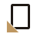
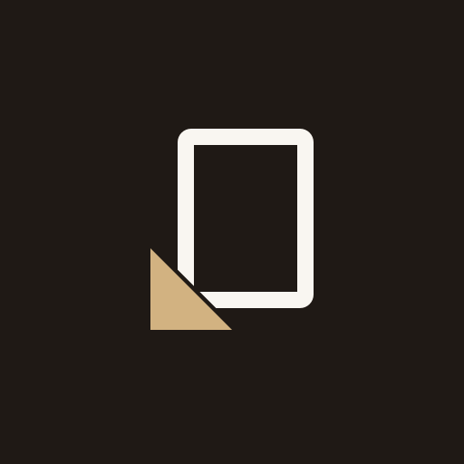
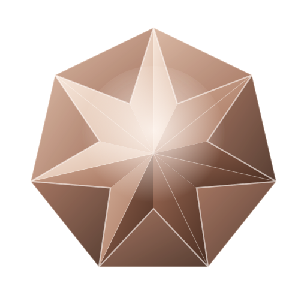

Three symbol concepts, each tested at 16–128px, in one colour, reversed, and as an app tile. Rule carried over from the earlier brief (docs/logo-concepts/BRIEF.md): the symbol contains no letter, so it survives a name change; the wordmark sits beside it as a separate element.
A portrait print held by one album corner. The corner mount is the oldest way a photograph is kept without glue or damage: it says "preserved", not "taken". No camera, lens, ring, flower or heart. Two shapes, one rectangle and one triangle.

colour
app iconChosen. Reads at 16px as "a picture with something holding it", is not a category cliché, carries the brand idea (keeping), and gives the product a reusable motif: the corner can mark a selected photo, a confirmed booking, or a saved state.
A sheet of film identified by its notch code: the cuts on the edge that let a photographer recognise a film by touch in the dark. Abstract, monochrome by nature, and genuinely from photographic craft.
Rejected. The reference is invisible to brides and to most digital-era photographers; without the story it is a ticket or a SIM card. Inside a rounded app tile it becomes a rectangle inside a rectangle.
The Levantine arch as a doorway: the threshold of a new life, and a frame without a camera. It already appears in the product as the arch-masked hero image.
Rejected as the logo, kept as an image mask. The arch is the most repeated shape in boutique and wedding branding of the last five years; it is strong and legible but not ownable. It says "venue" more than "memory".

128A faceted gem built from 20+ gradient polygons: reads as jewellery, cannot be reproduced in one colour, turns to a brown smudge at 16px, and its rose-copper palette matches nothing in the interface.